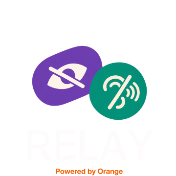
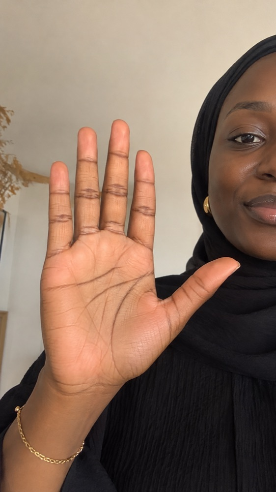

The eight frames of CONCEPT ASL in code, on the OUDS tokens read from the file. Two layers the static frames could not carry are live here: the microphone listening and transcribing, and the camera reading sign language.
How to try it: tap the chips below to move between screens. Two of them run by themselves — Camera AI, where the phone locks onto a hand and turns signs into English one sign at a time, and Voice AI, where speech arrives as captions that correct themselves as they settle. Both restart every time you open them, so give each about fifteen seconds. Nothing here uses your real camera or microphone.

You can refuse either one. Relay tells you what you lose.
Reads your signs so the phone can speak them. Without it you can still type and still read them.
Hears them speak so you get captions. Without it, they have to type everything on your phone.
Welcome to Relay
ASL AND ENGLISH
The camera reads your signs. The phone says them out loud, in English.
Their words arrive as text, or as an avatar signing them. You pick which.
They install nothing. If they need to type, you hand it over for one box.
RELAY INTERPRETER
Talk normally. Please look at me, not at the screen.
Select one of the options

Reading…
Waiting for your first sign…
Your signed message, spoken aloud.
YOUR MESSAGE
Pass the phone to the other person.
Tap Listen to stop playback and hear their reply.
Their words appear here as they speak.
THEY’RE SAYING
What a static frame cannot show: the camera deciding it is looking at a hand, and turning signs into words.
The microphone side of the same conversation.
Tokens and assets read from CONCEPT ASL, not eyeballed.